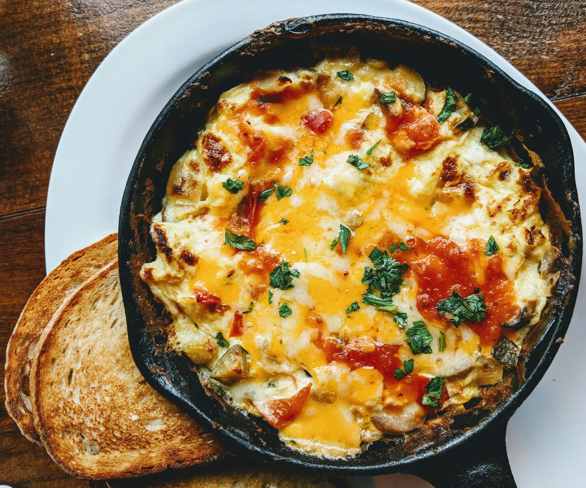

Homepage
Cheesse Omlette

Description
A cheese omelette is a classic breakfast dish made by whisking eggs and cooking them
in a pan with melted cheese. It's fluffy, savory, and perfect for a quick meal.
Ingredients
- 3 eggs
- 1/4 cup shredded cheddar cheese
- 1 tablespoon butter
- Salt and pepper to taste
Instructions
- Crack the eggs into a bowl, add salt and pepper, and whisk until well combined.
- Heat a non-stick pan over medium heat and add the butter.
- Once the butter is melted and bubbling, pour in the whisked eggs.
- Let the eggs cook undisturbed for a minute until they start to set around the edges.
- Sprinkle the shredded cheese evenly over one half of the omelette.
- Using a spatula, carefully fold the other half of the omelette over the cheese.
- Cook for another minute until the cheese is melted and the eggs are fully cooked.
- Slide the omelette onto a plate and serve hot.